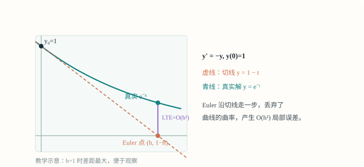
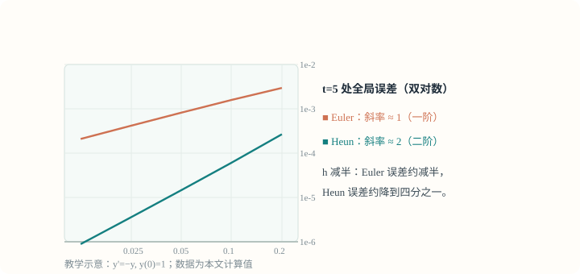

CHAPTER 25 · NUMERICAL ANALYSIS
常微分方程数值解（一）：Euler 法与预估-校正
至此我们都在解静态问题。从这一章开始，方程里出现时间：给定现在的状态，求它如何演化。y'=f(t,y) 几乎都没有解析解，唯一的路是一步步往前推。推得准不准、稳不稳，就是这一章与下一章的全部内容。
01 · 初值问题
输入：右端函数 f(t,y)、初值 (t₀,y₀)、步长 h。输出：近似解序列 yₙ≈y(tₙ)，tₙ=t₀+nh。假设：f 对 y 满足 Lipschitz 条件（保证解存在且唯一，也是误差传播分析的前提）。
除了少数特例（如 y'=y、y'=y² 这种可分离变量），大多数 ODE 没有初等函数形式的解析解。于是所有算法都走同一条路——逐步推进：已知 (tₙ,yₙ)，用某种规则算出 yₙ₊₁。分歧只在于“用什么规则”。
02 · Euler 法
用 y'(tₙ)≈(y(tₙ₊₁)−y(tₙ))/h 替换导数，就得到向前 Euler 法。几何上是在 tₙ 处沿切线走一步。
把导数换成 终点 tₙ₊₁ 处的值，就得到向后 Euler 法：yₙ₊₁=yₙ+h f(tₙ₊₁,yₙ₊₁)。这是一个隐式公式——yₙ₊₁ 出现在两边：若 f=λy 可解出 yₙ₊₁=yₙ/(1−hλ)，否则每步要用牛顿法解方程。

y'=−y，h=1）。虚线是 t₀ 处切线 y=1−t，青线是真实解 e⁻ᵗ；Euler 把切线与 t₁ 的交点当作解，竖直差距就是这一步丢弃曲率造成的局部截断误差（O(h²)）。03 · 局部与整体误差
局部截断误差（LTE）假定这一步的起点完全精确，单步引入的误差。用泰勒展开：
整体误差是从 t₀ 走到 t 的总误差。需要约 T/h 步，每步约 O(h²)，粗估 (T/h)·O(h²)=O(h)。所以“LTE 是 O(h²)”并不矛盾于“Euler 是一阶方法”：对 p 阶方法，LTE=O(h^{p+1})，整体误差=O(h^p)。图 2 把这条规律画到了双对数坐标上。

y'=−y 在 t=5 处的全局误差。Euler（橙）在 h=0.2,0.1,0.05 时误差为 2.96e−3, 1.58e−3, 8.17e−4，斜率≈1（一阶）；Heun（青）为 2.66e−4, 6.08e−5, 1.46e−5，斜率≈2（二阶）。数据为本文计算值。04 · 改进 Euler 与预估-校正
如果把区间上的变化率取左右端点的平均，精度就提高了——这就是梯形法：
梯形法的 LTE=O(h³)，是二阶方法；但它是隐式的。把它显式化就得到 Heun 法（改进 Euler）：先用向前 Euler 做预估，再用梯形公式做校正。
注意 f 取值；最终结果取校正值。关键结论是精度提升是“便宜”的：Heun 每步只需两次 f 求值（Euler 一次），却把误差从 O(h) 提到 O(h²)——计算量翻倍，精度却高一个量级。这正是 Runge–Kutta 方法“多花几次求值换高阶”的雏形。
05 · 失败边界
“直觉上正确”的 Euler 法会失败，而且往往不报错，只是安静地产出错数据：
| 场景 | 原因 | 表现 | 对策 |
|---|---|---|---|
| 步长过大 | 违反稳定性 |1+hλ|≤1 | 解振荡发散 / 实物为负 | 减小 h，或换隐式 |
刚性问题 |λ| 大 | 稳定性限制 h<2/|λ| | 步长被稳定性（非精度）卡死 | 隐式方法（第 27 章） |
| 只看精度选步长 | 忽略稳定性约束 | “看着合理”的假数据 | 同时校验稳定域 |
以 y'=λy（λ<0）为例，向前 Euler 的放大因子是 R=1+hλ；要求 |R|≤1 就得 h≤2/|λ|。当 λ=−100 时 h≤0.02，而真实解单调衰减——是数值稳定性、而不是精度在限制步长。
06 · 实验与选型
对 y'=−y, y(0)=1（解析解 e⁻ᵗ）在 t=5 处比较两种方法的全局误差，并估计阶数：
失败边界（可验证）：第一，减小 h 时误差应按阶数下降，否则实现有错；第二，对 y'=−100y，h>0.02 时向前 Euler 会发散，无论精度多高；第三，显式方法都不是无条件稳定的。
import math
def forward_euler(f, y0, T, h):
n = round(T / h); y = y0
for _ in range(n):
y = y + h * f(y)
return y
def heun(f, y0, T, h):
n = round(T / h); y = y0
for _ in range(n):
k1 = f(y); y_pred = y + h*k1; k2 = f(y_pred)
y = y + h/2 * (k1 + k2)
return y
f = lambda y: -y
T, exact = 5.0, math.exp(-5.0)
# 全局误差：h 减半，Euler 约减半（p=1），Heun 约降为 1/4（p=2）
for name, stepper in [("Euler", forward_euler), ("Heun", heun)]:
e1 = abs(stepper(f, 1.0, T, 0.05) - exact)
e2 = abs(stepper(f, 1.0, T, 0.025) - exact)
p = math.log2(e1 / e2) # 观测阶数
print(f"{name}: e(h=0.05)={e1:.3e}, e(h=0.025)={e2:.3e}, p≈{p:.2f}")
# 稳定性边界：y'=-100y, h=0.03 > 0.02 时向前 Euler 发散
lam, h_bad = -100.0, 0.03
assert abs(1 + h_bad*lam) > 1 # |R|>1 ⇒ 不稳定
print("unstable because |1+h*lambda| =", abs(1 + h_bad*lam))这段纯 Python 实验验证了三件事：Euler 的观测阶数约为 1、Heun 约为 2；以及当 |1+hλ|>1 时向前 Euler 失去稳定性。工业界更常用的是自适应步长 RK4——下一章的主题。
| 方法 | 阶数 | 每步 f | 稳定性 | 适用场景 |
|---|---|---|---|---|
| 向前 Euler | 1 | 1 | 条件稳定 | 教学/极短区间 |
| 向后 Euler | 1 | 解方程 | 强稳定（A-稳定） | 刚性问题 |
| Heun | 2 | 2 | 条件稳定 | 一般非刚性 |
| RK4 | 4 | 4 | 条件稳定 | 高精度非刚性（下章） |
原始资料与延伸阅读
本章将已知结论与本文独立构造的数值示例区分开：LTE=O(h^{p+1}) 与全局误差 O(h^p) 的关系、向前 Euler 的稳定条件 |1+hλ|≤1、梯形法与 Heun 的二阶精度均为理论结果；图 1、图 2 与实验中的误差、阶数为本文教学演示（已简化）。
- SciPy · scipy.integrate.solve_ivp：
RK45、BDF、Radau等自适应步长初值问题求解器（含误差控制与容差）。 - E. Hairer, S. P. Nørsett, G. Wanner, Solving Ordinary Differential Equations I, Springer, 2nd ed., 1993。初值问题方法的阶数、相容性与稳定性分析。
- Nicholas J. Higham, Accuracy and Stability of Numerical Algorithms, SIAM 第二版, 2002。舍入误差与误差累积的一般框架。